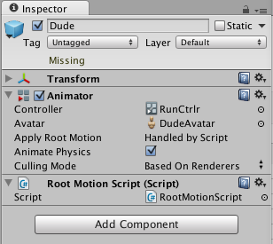

Tutorial: Scripting Root Motion for "in-place" humanoid animations
Sometimes your animation comes as "in-place", which means if you put it in a scene, it will not move the character that it's on. In other words, the animation does not contain "root motion". For this, we can modify root motion from script. To put everything together follow the steps below (note there are many variations of achieving the same result, this is just one recipe).
- Open the inspector for the FBX file that contains the in-place animation, and go to the Animation tab
- Make sure the Muscle Definition is set to the Avatar you intend to control (let's say this avatar is called Dude, and it has already been added to the Hierarchy View).
- Select the animation clip from the available clips
- Make sure Loop Pose is properly aligned (the light next to it is green), and that the checkbox for Loop Pose is clicked

- Preview the animation in the animation viewer to make sure the beginning and the end of the animation align smoothly, and that the character is moving "in-place"
- On the animation clip create a curve that will control the speed of the character (you can add a curve from the Animation Import inspector Curves-> +)
- Name that curve something meaningful, like "Runspeed"

- Create a new Animator Controller, (let's call it RootMotionController)
- Drop the desired animation clip into it, this should create a state with the name of the animation (say Run)
- Add a parameter to the Controller with the same name as the curve (in this case, "Runspeed")

- Select the character Dude in the Hierarchy, whose inspector should already have an Animator component.
- Drag RootMotionController onto the Controller property of the Animator
- If you press play now, you should see the "Dude" running in place
Finally, to control the motion, we will need to create a script (RootMotionScript.cs), that implements the OnAnimatorMove callback:-
using UnityEngine;
using System.Collections;
[RequireComponent(typeof(Animator))]
public class RootMotionScript : MonoBehaviour {
void OnAnimatorMove()
{
Animator animator = GetComponent<Animator>();
if (animator)
{
Vector3 newPosition = transform.position;
newPosition.z += animator.GetFloat("Runspeed") * Time.deltaTime;
transform.position = newPosition;
}
}
}
You should attach RootMotionScript.cs to the "Dude" object. When you do this, the Animator component will detect that the script has an OnAnimatorMove function and show the Apply Root Motion property as Handled by Script
